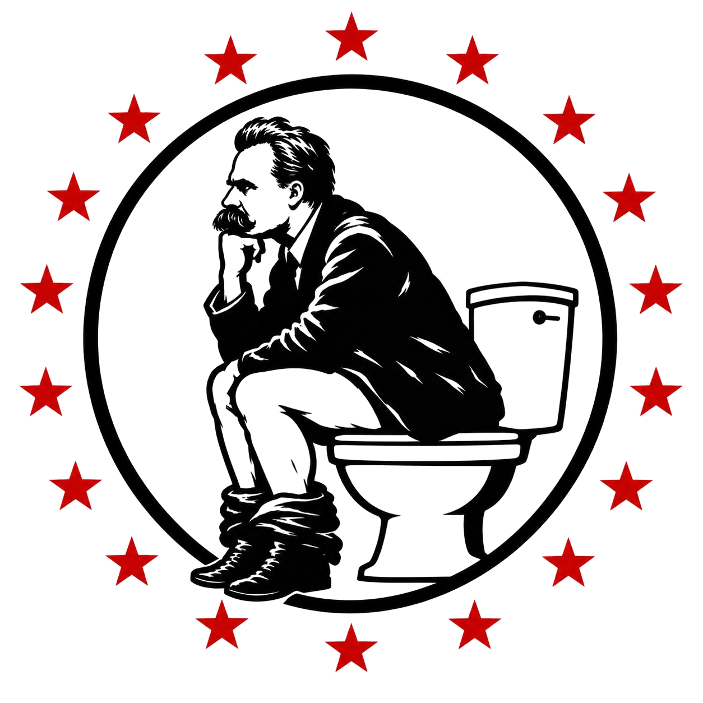

Ten Thousand Doors
A bright-eyed reformer knocks on ten thousand doors, wins the seat, writes the bill that would actually work — and learns what the machine does to people who try to fix it. Fiction. The mechanism is real.
Open it up →
You knocked on ten thousand doors believing you could fix it from the inside. The machine had other plans. A fiction about what power does to the people who try to change it.
Read it →Every story, same procedure: what happened · what each side claims · what the evidence says · who benefits. Jabs only where earned.
A bright-eyed reformer knocks on ten thousand doors, wins the seat, writes the bill that would actually work — and learns what the machine does to people who try to fix it. Fiction. The mechanism is real.
Open it up →One checkbox, lifetime disarmament: no hearing, no proof of danger, no way out. The federal felon gun ban is being torn apart in the courts. Both steelmen, the evidence, and who profits from the checkbox.
Open it up →Twelve rules for reading the news without getting played — plus a jargon decoder that translates what politicians and pundits actually mean. A living document: corrected in public, never quietly.
From the first grain taxes of Mesopotamia to the present day: eleven themes behind every collapse — complexity, succession, debt, emergency powers, scapegoats, ecological overshoot, and more — stacked with examples across six thousand years.
The week in American politics — what happened, what each side claims, and the incentive read underneath it. Dated every edition, refreshed weekly, never quietly rewritten.
Game theory is the operating system of politics: prisoner's dilemmas, chicken, credible threats, costly signals, and why gridlock is an equilibrium. Taught from zero, with real political examples.
The economy in plain English — what the Fed did, what inflation is actually doing, what it means for your wallet — plus the policy changes moving the money. Updated weekly.
Short takes. Same rules. No sacred cows.
The Congressional Budget Office put the fiscal 2026 deficit at $1.993 trillion — up $218 billion (12%) from 2025, the largest since 2021. Spending hit $7.4 trillion (+6%); revenue $5.4 trillion (+3%). That's a wartime-sized gap, over 6% of GDP, during an economic expansion with low unemployment — the kind of deficit economists expect from recessions, not growth years. The administration cut the federal workforce and clean-energy breaks; the deficit widened anyway, driven by tariff refunds, immigration-enforcement spending, extended tax cuts, and entitlements.
On October 1, France's 10-year bond yield touched 5 percent — highest since July 2002 — with the premium over German bonds widening to about 1.5 points, a gap not seen since the 2011 eurozone debt crisis. The trigger: a minority government's 2027 budget plan (€54 billion in cuts and tax measures) against public debt near 120% of GDP and record €340 billion in planned borrowing. In March 1983, Mitterrand reversed his socialist program under currency-market pressure; this time the pressure comes from bond buyers, with France's annual interest bill projected to rise from €62.6 billion to €72.9 billion.
On October 6, the Navy awarded defense tech firm Anduril a contract worth up to $2.9 billion for submarine components, alongside Anduril's own $3.7 billion shipyard plan at Sparrows Point, Maryland — a $6.6 billion package announced by Trump personally. Anduril's founder Palmer Luckey has given about $5.9 million to Republican causes since 2017 and was named a Pentagon adviser by Defense Secretary Hegseth the week before the award. The shipyard won't produce parts until 2030. The contract is real; the sequence is the story.
On October 1, Treasury auto-enrolled 60 million children into Trump Accounts, bringing the total to 70 million. But enrollment isn't participation: in the first week, fewer than 164,000 accounts — under 1% — were actually claimed by parents through the app. $4.5 billion has flowed in since the July launch, including $1.3 billion in government seed money and $2.6 billion from philanthropists. The headline number is 70 million; the real number is how many families show up.
Four weeks before the midterms, the Justice Department charged 16 noncitizens across four states with illegal voting, fraudulent registration, and false citizenship claims. All 16 are lawful permanent residents — green card holders, not border-crossers. Minnesota accounts for 10; the rest in Louisiana, Florida, and Wisconsin. The charges are accusations; every defendant is presumed innocent. The timing and the legal-resident detail are both doing work here.
CNN, MS NOW and Politico asked a judge to extend the block on the White House ban (Reuters). The DOJ's new justification: national security, classified leaks. Watch the receipts — if there are leaks, show the leaks; if it's still "fake news," that's the viewpoint discrimination the first judge flagged.
The White House withheld $810M in appropriated funds days before the fiscal year dies — and the loudest objection came from a Republican, Appropriations chair Susan Collins. The power of the purse is constitutional, not partisan. The second year in a row is a strategy, not an incident.
The Senate voted down the Iran war powers resolution — even four Republican defectors couldn't carry it. The branch that declares war keeps refusing to, while funding every bomb. Authority unspent means nobody owns the outcome. That's the whole incentive story.
Correction on the record: the Graham Act doesn't let the president slap tariffs on Russia's oil buyers — it requires them within 30 days. We said "discretionary" in Edition № 001. We were wrong. Loud corrections, no memory holes.
CNN, MS NOW and Politico sued over the White House ban — but the walkout is the real signal. When the rest of the press corps refuses to play without the banned outlets, the ban stops being discipline and starts being a boycott the administration owns.
The 30-year crossed 7% on live quotes the same week the Fed admitted it won't hit 2% inflation until 2029. That's three more years of somebody's kitchen table absorbing the anti-inflation tool. Nobody votes their GDP — they vote their monthly payment.
Both parties have a problem they can raise campaign money off of. Don't expect it solved: a solved problem can't scare supporters into donating, and in Washington the donations matter more than the fix.
Every headline designed to make your blood boil is doing its job: your anger is the goods on the shelf, your attention is what's being sold, and advertisers are the buyers. You're the crop.
When Washington starts a trade war — new tariffs, new threats — skip the press conference. Watch your grocery bill. That's the only honest announcement in town.
Dissent is the most American thing there is.
Distortion Daily is a DIY political news board run out of Dallas, Texas. No party owns it. No donor owns it. No advertiser gets a red pen. We cut every story open the same way — what happened, what each side claims, what the evidence supports, who cashes in — and we only swing where the receipts say to swing.
One email when an autopsy drops. No spam, no list-selling, no seventeen "just bumping this" follow-ups from a marketing intern. Unsubscribe whenever — we'll only be mildly devastated.
The Dispatch email list opens when the .com lands — until then, the board itself is the feed. No dead signup forms here.
No paywall. Ever. Distortion Daily is a one-person operation — if this board earns your time, keep the lights on: your donation goes directly to the publisher. Hosting, research, and coffee. In that order.
Support Distortion Daily →